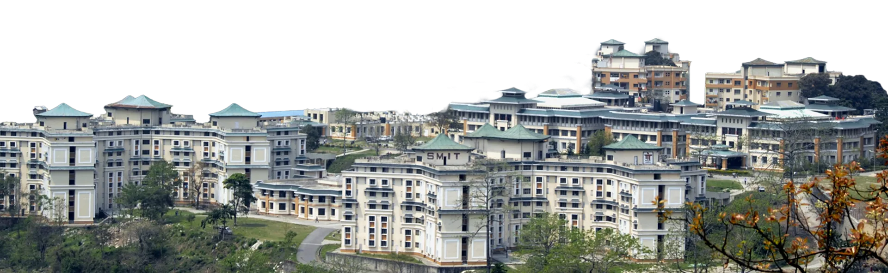

Top-Ranked Private University In North East

Rankings & Accreditations

Accredited in A+ grade by National Assessment and Accreditation Council

UGC-entitled Online Degrees Equivalent to Campus Degree
Ranked 151-200

Amongst India’s Top 200 Universities in 2025

AICTE Norms Compliant
Rank 330

Amongst South Asia's Top Universities (2026)

Degrees Evaluated by - World Education Services
Rank 1

Top Private University in North East
Rank 15

Amongst Top Leading Universities Showcasing Entrepreneurial Spirit
Rank 6

Amongst Top Multidisciplinary Universities in Eastern India (2025)
Rank 601+

#601+ in Asia University Rankings (2025)
Top Online Courses


Leading with results
Years of quality education
Faculty & staff
Alumni
Learner footprint across towns & cities of India
Meet your expert faculty

Dr. Madan is currently working as an Associate Professor at Sikkim Manipal University, India. He is a dedicated, resourceful, and goal-driven professional educator with 27 years of experience in the field of teaching at various colleges and universities. He has authored two books and has in his credit numerous publications in UGC CARE listed/SCOPOUS journals. His areas of interest include Finance, Banking, and Research Methodology among others.
Read More
Dr. Madan Chettri
Associate Professor

Dr. Anupam Kumar Pandey is currently working as an Associate/Assistant Professor (SG) at Sikkim Manipal University. He has completed his Ph.D. from Banaras Hindu University on Disinvestment in Public Sector Enterprises in India- A Case Study, graduation and post-graduation from Devi Ahilya University, Indore (M.P.). He specializes in income tax, corporate accounting, business regulatory framework, and business finance. Dr. Pandey has over ten years of teaching experience. He has presented multiple research papers at National and International Conferences and has been credited with many research publications in reputed journals.
Read More
Dr. Anupam Kumar Pandey
Associate Professor/ Assistant Professor (SG)

Dr. Aditya Rai is working as an Associate Professor at Sikkim Manipal University. Previously he worked at ICFAI University, Sikkim as an Assistant Professor from 2014 to 2016 and was also the guest faculty at various universities like ICFAI Sikkim, Vinayak Missions Sikkim University, RIM (Annamalai University), and SRM University. Apart from teaching he was the trainer for local entrepreneurs of Sikkim in SBIRSETI. He has worked in the Industry as an Authorized Person in Peerless Securities and as a Certified Financial Consultant in HDFC Life. He completed his bachelor’s degree in B.com Accounts Hons from St Joseph’s College North Point Darjeeling in the year 2009 and an MBA in Finance from SMU in 2011. Com from IGNOU. He has NET in both Management and Commerce and has completed his PhD from Sikkim Central University. He has authored two books, contributed book chapters, and written articles in Listed and peer-reviewed journals.
Read More
Dr. Aditya Rai
Associate Professor

Dr. Ruchita Sharma is currently working as an Assistant Professor at Sikkim Manipal University. She has pursued her Ph.D. from Sikkim University. She is a gold medalist in M. Com (Accounting & Finance) with over 3 years of experience in teaching and her area of research interest is mainly in finance, banking, and microfinance.
Read More
Dr. Ruchita Sharma
Assistant Professor

Dr. Sachin Limbu works as an Assistant Professor at Sikkim Manipal University. He has completed his M. Phil and Ph. D from the School of International Studies, Jawaharlal University, New Delhi, and has cleared both NET and SLET in an applied field. His area of interest includes international politics, foreign policy, Russia, neo-Eurasianism, and political and cultural aspects of the Eastern Himalayas. He has research and teaching experience of 8 years. Over the years he has published research papers, attended seminars and workshops, and delivered several talks on All India Radio.
Read More
Dr. Sachin Limbu
Assistant Professor

Dr. Urgen Mangar is currently serving as an Assistant Professor at Sikkim Manipal University, India. He holds both an MBA and a Ph.D. from the Department of Management and Commerce at Shri Ramasamy Memorial (SRM) University, Sikkim. His primary research interests are in the areas of Consumer Behaviour and Tourism Management. Dr. Mangar has actively contributed to academia through his participation in numerous workshops, and has published research articles in reputed journals. He has also presented his work at various national and international seminars and conferences.
Read More
Dr. Urgen Mangar
Assistant Professor

Ms. Bijetri Pathak is currently working as an Assistant Professor at Sikkim Manipal University, India. She had completed her graduation and Master of Arts in Politics with International Relations from Jadavpur University. She was a part-time lecturer at Loreto College, Kolkata, and is pursuing her Ph.D from the University of Kalyani. She has a profound interest in gender studies, Indian politics, and Indo-Pacific studies. With a keen eye for societal dynamics and political landscapes, she navigates the intricate realms of academia with a passion for research and critical discourse. Her papers were published in various national and international journals.
Read More
Ms. Bijetri Pathak
Assistant Professor

Ms. Nilanjana Sinha is currently working as an Assistant Professor at Sikkim Manipal University, India. She has completed her Masters in English from the University of North Bengal and has been the department topper in graduation from North Bengal St. Xavier’s College. Her research interest spans across identity, culture and ethnicity. Being an avid reader of stories and poems, she enjoys writing her own and has independently organized numerous events on spoken word poetry in her hometown, Kalimpong. She is also the community editor of The Pomelo, an e-magazine aimed at exploring Himalayan voices helmed by young women researchers of India and Nepal.
Read More
Ms. Nilanjana Sinha
Assistant Professor

Ms. Deepa Sharma is currently working as an Assistant Professor at Sikkim Manipal University. Before joining Sikkim Manipal University, she held the position as a Lecturer at Gyan Jyoti College, affiliated to the University of North Bengal. She is currently pursuing PhD in Corporate Social Responsibility at the Department of Commerce, Manipal Academy of Higher Education. She has presented multiple research papers at national and international conferences and published papers in journals of international repute. She is also collaborating on a research project as part of the Manipal Research Board with faculty from Manipal University, Jaipur. She completed her bachelor's degree in B. Com (Hons) from Siliguri College of Commerce, Siliguri in 2009. Subsequently, she pursued her M. Com in Accountancy & Finance from the University of North Bengal in 2012. She has also completed her MBA in Finance from Sikkim Manipal University- Directorate of Distance Education.
Read More
Ms. Deepa Sharma
Assistant Professor

Ms. Tshering Ganden Bhutia is currently working as an Assistant Professor at Sikkim Manipal University, India. She has completed her master’s in commerce (M.Com) from the University of Delhi with major in Marketing Management and minor in International Business, she completed her bachelor’s in commerce (B.Com) from University of Delhi. Her research interest spans Consumer Behaviour, Marketing Mix and Business Environment. She has worked as an intern in NGOs like Feeding India where she worked under the Talent Management Team. She loves reading and crocheting during her leisure time.
Read More
Ms. Tshering Ganden Bhutia
Assistant Professor

Ms. Anushka Chhetri is currently working as an Assistant Professor at Sikkim Manipal University, India. She has completed her graduation from St Joseph’s College, Darjeeling, and her master's degree in political science from the University of North Bengal. She has a major in Public Administration, and her research interest includes Indian Politics and State and Sub-state Politics in India. She is a silver medalist in her graduation.
Read More
Ms. Anushka Chhetri
Assistant Professor

Mr. Royal Tamang (Moktan) is currently working as an Assistant Professor at Sikkim Manipal University. He is pursuing a Ph.D. from Sikkim Skill University in the Management Department. He specializes in marketing and finance specialization. Mr. Royal Tamang has more than 9 years of teaching (offline and online) and corporate experience combined. He has qualified for UGC-NET twice and holds an array of workshops, training, seminars, and symposiums under him.
Read More
Mr. Royal Moktan
Assistant Professor

Lakshmi Priya KS is an Adjunct faculty at Sikkim Manipal University. She holds a master's degree and MPhil in political science from the University of Hyderabad. She is a seasoned academician and researcher with over 5 years of experience in education and research and has academic expertise in Gender Studies, Indian Political Process, Public Policy, and International Relations. Previously, she worked as a faculty member at prestigious universities like Maharani Lakshmi Ammani College, Bangalore and University College Mangalore. She has also worked on research projects with reputed institutes like the Tata Institute of Social Sciences and Indian Institute of Technology Madras. Her areas of expertise include Political Theory, International Relations, Public Administration, and Gender Studies.
Read More
Ms. Lakshmi Priya K.S
Adjunct Faculty

Aranya Ghosh is currently working as an Assistant Professor at Sikkim Manipal University. He has completed his MBA in dual specialization in Human Resource and Marketing from Sikkim Manipal Institute of Technology. He has an industry experience of above 2.4 years, where he worked on marketing strategies, gaining an understanding of the client's requirement, the core objective of considering the course, and delivering customized solutions, formulating a business strategy to achieve targets in terms of lead generation and admission, acquiring new customers by educating them about the courses and services offered by the University, while retaining existing customers, assisting in promotional activities including market visits, campaigns, digital & print media displays, and customer engagement, etc.
Read More
Mr. Aranya Ghosh
Assistant Professor

Mr. Partha Debnath is currently working as an Assistant Professor of English at Sikkim Manipal University, India. He is pursuing his Ph.D. and cleared UGC NET in 2020 and 2022. He has completed his M.A. in English from Kalyani University, West Bengal, and his B.A. in English from Kanchrapara College, West Bengal. He is involved in several translation projects. He has published several journal articles and book chapters and presented papers in multiple national and international seminars and conferences. He is a member of the Comparative Literature Association of India (CLAI), the South Asian Literary Association (SALA), and the Indian Network for Memory Studies (INMS). His areas of interest include Feminism, Deconstruction, and Trauma theory.
Read More
Mr. Partha Debnath
Assistant Professor

Mr. Raju Chettri is currently working as an Assistant Professor at Sikkim Manipal University, India and he holds an experience of 13 years in both academics and industry. He has completed his Master of Commerce from IGNOU and Bachelor of Commerce (Honours) from St. Anthony’s College affiliated with North-Eastern Hill University. His research interest includes Behavioral Finance.
Read More
Mr. Raju Chettri
Assistant Professor

Ms. Usmita Baraily is a dedicated scholar, with a strong passion for research and intellectual exploration, particularly in the areas of commerce and technology. She is currently pursuing a Ph.D. in Business Management at Sikkim Manipal Institute of Technology, with a research focus on the role of Artificial Intelligence in retail e-commerce and its impact on consumer behavior. She pursued her undergraduate studies at Sri Sathya Sai Institute of Higher Learning, Andhra Pradesh, earning a B. Com (Honors), and subsequently pursued an M. Com degree in Accounting and Finance at Sikkim Manipal University. In 2023, she qualified for the UGC NET (Commerce). Throughout her academic career, she has been actively involved in research and has presented several research papers at national conferences. Some of her works include studies on “The impact of oil shocks on India's macroeconomic performance”; “The role of homestays in promoting rural tourism”; and “A bibliometric review of corporate social responsibility (CSR) in firms”. One of her research papers was also published in the proceedings of a national conference. Her research experience is further enriched by her involvement in a funded project under the TMA Pai University Research Fund, titled “Community Perceptions and Expectations of Corporate Social Responsibility Activities of Select Pharmaceutical Companies in Sikkim”. This project highlights her ability to conduct community-based research and engage with important socio-economic issues.
Read More
Ms. Usmita Baraily
Assistant Professor

Mr. Rajdeep Dey is currently working as an Assistant Professor at Sikkim Manipal University. He has over 12 years of industry experience in government and private firms. He is a dynamic and result-oriented HR professional with over 7 years of experience in employee engagement, talent management, and strategic HR initiatives. Rajdeep Dey has completed his MBA (specialization in Human Resources) and B.Tech in Electrical and Electronics Engineering and has a proven track record of developing and implementing HR strategies aligned with business objectives.
Read More
Mr. Rajdeep Dey
Assistant Professor

Dr. AJAYKUMAR N is a full-time faculty member in the Department of English at the Centre for Distance and Online Education (CDOE), Sikkim Manipal University. He completed his M.A., M.Phil. and Ph.D. from Sikkim University and his B.A. from the Central University of Karnataka. His areas of interest include cultural studies and film studies. He previously worked as a guest faculty at Government Arts and Science College, Chelakkara, and Mar Dionysius College, Pazhanji, where he taught undergraduate and postgraduate students, facilitated academic discussions, and contributed to institutional activities.
Read More
Mr. Ajaykumar N
Assistant Professor

Mr. Pema Tenzing Bhutia is currently working as an Adjunct Faculty at Centre for Distance and Online Education (CDOE), Sikkim Manipal University, India. A dedicated academician and project management professional with over 7 years of experience in higher education and one year in consultancy, specializing in finance, marketing, and institutional development. He previously served as Assistant Professor and Head of Department at Sikkim Alpine University and also served Sikkim Manipal University for 5 years, contributing to curriculum development and academic leadership. Additionally, he worked as an Assistant Manager at SIBIN Consultancy, where he played a key role in educational infrastructure projects, including setting up a major college under the RUSA fund and managing online admissions for government institutions.
Read More
Mr. Pema Tenzing Bhutia
Adjunct Faculty

Ms. Salwa Lachungpa is currently working as an Assistant Professor at Centre for Distance and Online Education (CDOE), Sikkim Manipal University, India. She is an articulate and confident educator who thrives on challenges and excels under pressure. Passionate about teaching and committed to academic excellence, Ms. Lachungpa is dedicated to fostering a positive and inclusive learning environment. She actively promotes student engagement through innovative and learner-centric teaching methods. Her core strengths include effective communication, problem-solving, team collaboration, and adaptability.
Read More
Ms. Salwa Lachungpa
Assistant Professor

Mr. Uttam Kumar Upadhyaya is currently working as an Adjunct Faculty at Centre for Distance and Online Education (CDOE), Sikkim Manipal University, India. He is an enthusiastic and dedicated Assistant Professor in English with a passion for literature, linguistics, and pedagogy. With a master’s degree in English literature, he has cultivated a deep understanding of both classical and contemporary literary works. His academic interests include postcolonial literature, modernism, ethnicity and cultural studies. Having taught a wide array of undergraduate and postgraduate courses, he strives to create an interactive and inclusive classroom environment that encourages open discussions, critical analysis, and the development of writing skills. He also integrates modern pedagogical tools and technologies to enhance learning outcomes and engage students in innovative ways.
Read More
Mr. Uttam Kumar Upadhyaya
Adjunct Faculty

Dr. Aamir Aslam is an Adjunct Faculty member at the Centre for Distance and Online Education (CDOE), Sikkim Manipal University (SMU). He has completed all his academic qualifications—from Graduation to Ph.D. in Commerce—from the prestigious Aligarh Muslim University (AMU). Dr. Aslam has rich teaching experience at both undergraduate and postgraduate levels, handling diverse subjects such as Consumer Behavior, Sales Management, Business Law, Leadership and Personality Development, Research Methodology, Strategic Management, Financial Institutions and Markets, and International Marketing. In addition to his teaching responsibilities, he has been actively involved in academic administration as a Class Coordinator, Member of the Examination Committee, and Member of the NAAC Departmental Team. His doctoral research focused on environmental accounting disclosure practices, shareholding patterns, and firm performance in the Indian corporate sector. He is presently engaged in a seed-funded research project titled “E-Marketing in Mathura City” (2024–25). Dr. Aslam believes in promoting conceptual clarity, practical learning, and the integration of emerging business trends to prepare students for dynamic corporate challenges.
Read More
Dr. Aamir Aslam
Adjunct Faculty

Tenzin Nyima Bhutia is an Assistant Professor at Centre for Distance and Online Education, Sikkim Manipal University and a Ph.D. scholar at Sikkim University, where her research focuses on folk beliefs and iconography within Tibetan Buddhist traditions in Sikkim. She is also pursuing a diploma in Applied Buddhist Iconography from Nalanda University. Tenzin holds a BA, MA, and M.Phil from Jadavpur University, Kolkata, and has qualified the UGC NET in English. Her academic interests include folklore, oral narratives, Buddhist iconography, translation studies, and indigenous knowledge systems. With over five years of research experience, she has contributed as a book reviewer for international organizations, translated Bhutia folklores, and published her work in peer-reviewed journals and CARE Group I listed publications. She actively participates in national and international conferences and workshops, and is dedicated to preserving the cultural heritage of India’s Eastern Himalayan region by revitalizing indigenous knowledge and oral traditions.
Read More
Ms. Tenzin Nyima Bhutia
Assistant Professor

Ms. Madhuri Pal is currently serving as an Adjunct Faculty at Sikkim Manipal University, Sikkim, where she teaches in the Commerce specialization, promoting an academically enriching and industry-oriented learning environment. With over 6.5 years of academic experience, she is now pursuing a Ph.D. in Finance from Chaudhary Charan Singh University, focusing her research on the emerging trends in commerce and finance education in India.
Read More
Ms. Madhuri Pal
Adjunct Faculty

Mr. Manoj Kumar Limbu comes from a background in English Literature, with a strong inclination toward the teaching profession. His areas of academic interest extend from English Literature to Environmental and Animal Studies. He holds an M.A. in English and completed his M.Phil. in 2020 on the topic “Zoocritical Perspective on Two Novels: White Fang and Black Beauty” in the Department of English, Sikkim University, under the supervision of Dr. Parvinder Kaur, Assistant Professor, Department of English, Sikkim University. He is currently pursuing a Ph.D. in the same department.
Limbu regards education as an essential and impartial aspect of life. The processes of providing and acquiring knowledge have been among his deepest interests throughout his academic journey, making teaching his aspired profession. His scholarly pursuits are driven by a constant desire to explore new dimensions of art and literature, broadening both intellectual and experiential horizons. His academic career thus far has been highly rewarding and productive. He was awarded the Silver Medal in the Department of English, Sikkim University, for securing the second-highest score in the Master of Arts program in 2018.
Read More
Mr. Manoj Kumar Limbu
Adjunct Faculty

Ms. Arpita Bansode is currently working as an Assistant Professor (Commerce and Management) at the Centre for Distance and Online Education, Sikkim Manipal University. Her area of expertise are Financial Management, Corporate Finance, and Taxation, with strong proficiency in Direct and Indirect Tax Laws, Financial Accounting, and Cost and Management Accounting.
Read More
Ms. Arpita Bansode
Assistant Professor

Dr. Oindrila Banerjee is working as an Adjunct Faculty at the Centre for Distance and Online Education, Sikkim Manipal University. She holds MCom, MBA, and PhD and has 22 years of experience.
Read More
Dr. Oindrila Banerjee
Adjunct faculty

Dr. Manjari Sharma is an Assistant Professor in the Department of Management Studies at Sikkim Manipal Institute of Technology since 2020, and is a core member of the Institution Innovation Cell. She holds a Ph.D. in Management Studies from Sikkim University, an MBA (HR) from Sikkim Manipal University, and an M.Com (Gold Medalist) from Symbiosis College of Arts & Commerce. She gradutated her B.Com (Honours) from the reputed Shri Ram College of Commerce. With prior teaching experience at SRM University and ICFAI University, she has guided research scholars, published extensively in reputed journals, contributed book chapters, and co-edited an academic volume. Actively engaged in conferences, FDPs, and workshops, she has been recognized with awards including the Distinguished Teachers Award (2018) and Faculty of the Month (2023). She is also a life member of the Indian Commerce Association and the Indian Economic Association.
Read More
Dr. Manjari Sharma
Adjunct Faculty
Learner Demographics (2026)
Geographical Distribution
Note: Learner footprint across towns and cities of India
Note: Learner footprint across towns and cities of India
Age Group
Gender
Female
Male

Campus Immersions
Connect with fellow learners through exciting on-campus events.


Explore other Manipal institutions
Ranks 3rd amongst all universities